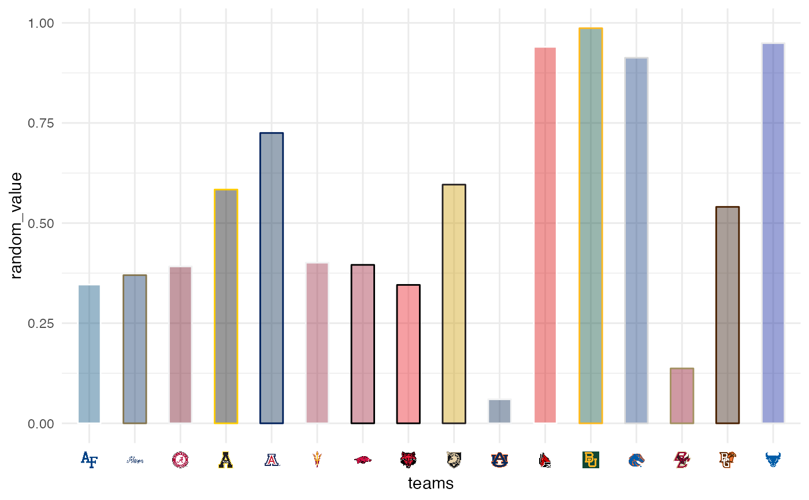

These functions are convenience wrappers around a theme call
that activates markdown in x-axis and y-axis labels
using ggtext::element_markdown().
theme_x_cfb() theme_y_cfb()
These functions are a wrapper around the function calls
ggplot2::theme(axis.text.x = ggtext::element_markdown()) as well as
ggplot2::theme(axis.text.y = ggtext::element_markdown()).
They are made to be used in conjunction with scale_x_cfb() and
scale_y_cfb() respectively.
theme_x_cfb(), theme_y_cfb()
library(cfbplotR) library(ggplot2) team_abbr <- valid_team_names() # remove conference logos from this example team_abbr <- team_abbr[1:16] df <- data.frame( random_value = runif(length(team_abbr), 0, 1), teams = team_abbr ) ggplot(df, aes(x = teams, y = random_value)) + geom_col(aes(color = teams, fill = teams), width = 0.5) + scale_color_cfb(alt_colors = team_abbr) + scale_fill_cfb(alpha = 0.4) + scale_x_cfb() + theme_minimal() + theme_x_cfb() #> Warning: libpng warning: iCCP: known incorrect sRGB profile 